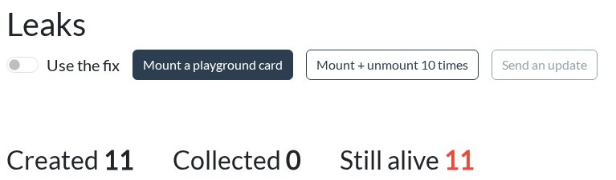

<section data-template="claim-image">
  <div class="block" data-type="text" data-name="title" style="left:64px;top:96px;width:1150px;height:auto;z-index:10;text-align:left">
    <h2>Leaks in Angular apps</h2>
  </div>
  <div class="block" data-type="text" data-name="claims" style="left:64px;top:220px;width:520px;height:auto;z-index:11;text-align:left">
    <ul>
<li>A leak: something long-lived still points at your component</li>
<li>Suspects: <code>setInterval</code>, <code>window</code> listeners, a map library</li>
<li>A long-lived manual <code>subscribe</code></li>
</ul>
  </div>
  <div class="block" data-type="image" data-name="image-1" data-keep-ratio style="left:640px;top:220px;width:614px;height:180.1px;z-index:12">
    
  </div>
  <div class="block fragment" data-type="text" data-name="punchline" style="left:64px;top:450px;width:1150px;height:auto;z-index:13;text-align:left">
    <p><span style="color:#ff8c00">11 cards unmounted, 11 still in memory</span></p>
  </div>
  <aside class="notes">Demo: /performance/leaks. Mount a playground card, Unmount, Mount + unmount 10 times: Created 11, Still alive 11; Memory -&gt; Collect garbage: still 11. Reload, tick Use the fix, Mount + unmount 10 times, collect garbage: Created 10, Collected 10, Still alive 0.
Click: eleven cards nobody can see.

Garbage collection frees what nothing points to. A leak is when something that lives longer than your component still points at it. In a single page app the page lives for hours, so every navigation can add one more.
The usual suspects. setInterval: the browser holds your callback, and the callback holds the component. Listeners you put on window or document yourself. Third-party objects like a Leaflet map, which adds its own listener on window. And a subscribe you made by hand to something that outlives the component.
Let me show you. /performance/leaks. Mount a card, unmount it, then Mount + unmount 10 times. Created 11, Still alive 11. Open the Memory tab and click Collect garbage: still 11. Nothing lets go of them.
Reload, tick Use the fix, same clicks, collect garbage: Created 10, Collected 10, Still alive 0.
Click. Eleven cards unmounted, eleven still in memory.
Two of these suspects are in our app on purpose. That's exercise 4.</aside>
</section>
